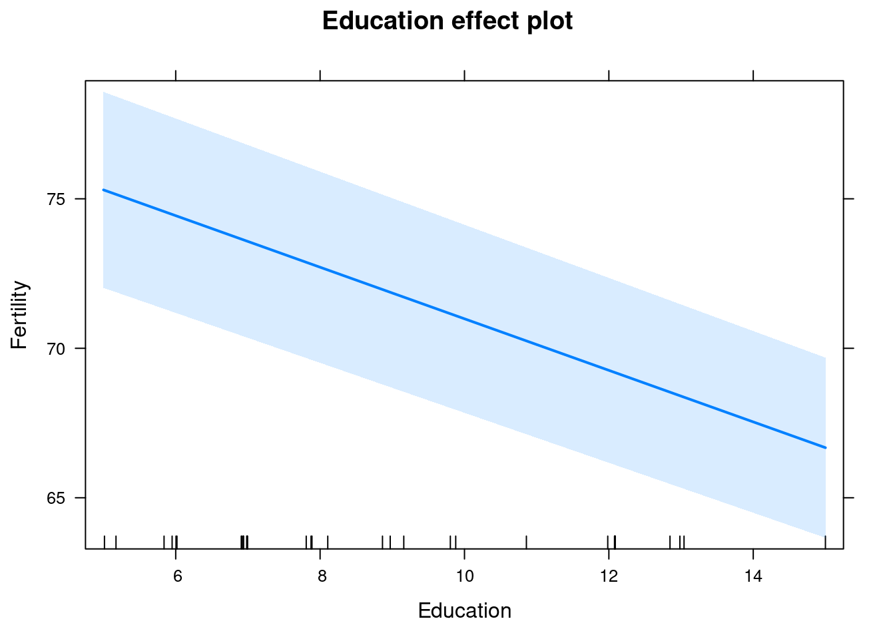
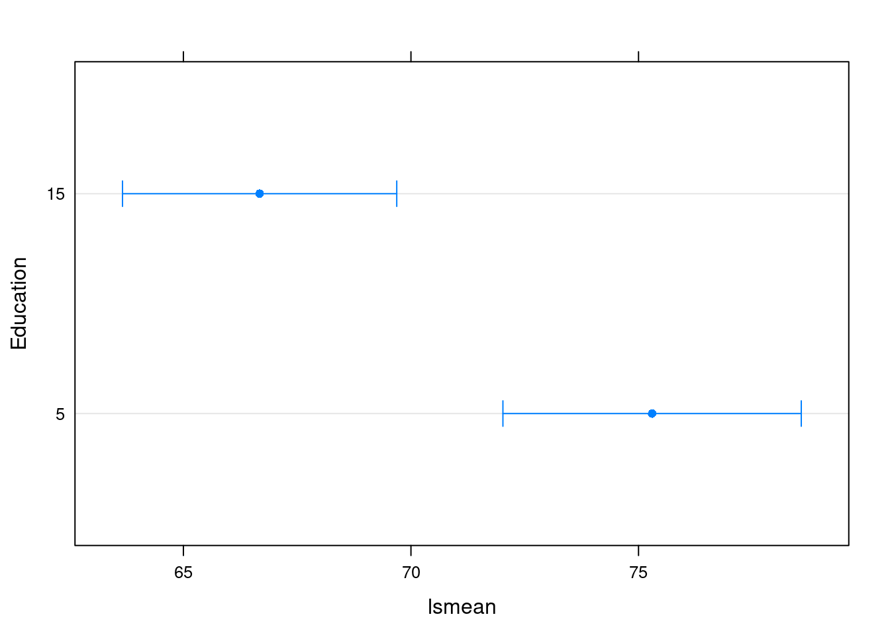
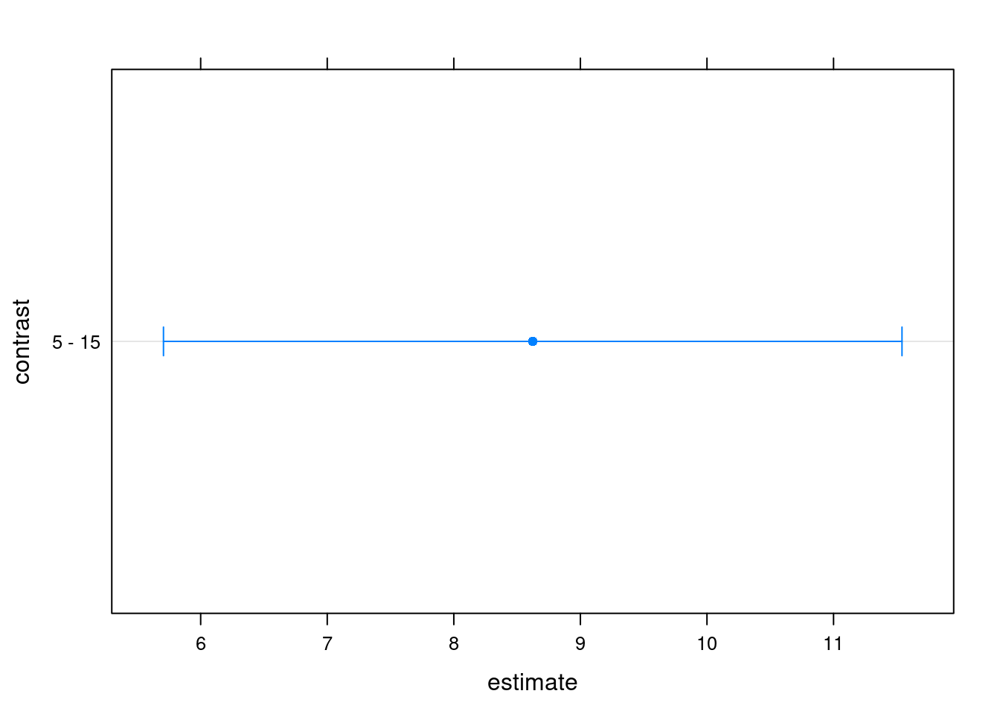
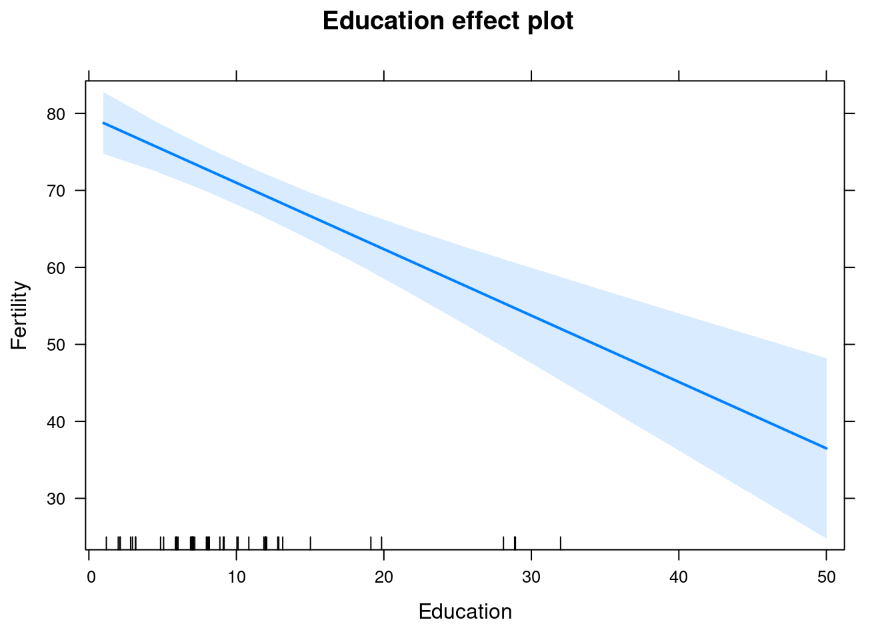
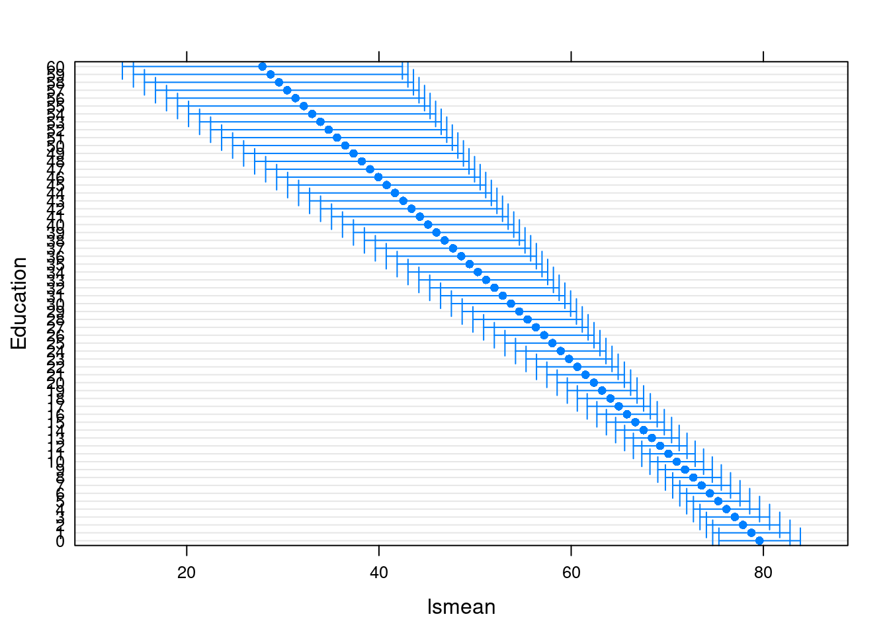
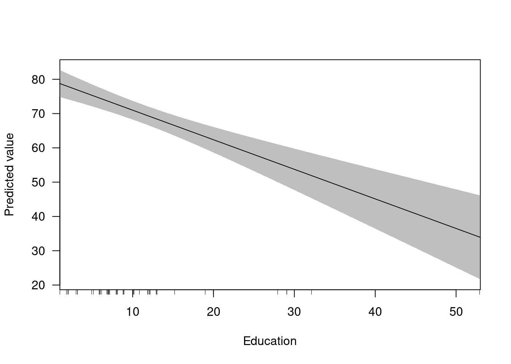

Built using Zelig version 5.1.4
Models in R can generally be fit using a formula interface. The fitted models can then be explored and post-processed in various was, for example to display an ANOVA-style table, calculate confidence intervals, or plot predictions from the model.
Let’s walk through an example. This example uses the swiss dataset. It contains data on fertility and socioeconomic factors in Switzerland’s 47 French-speaking provinces in 1888 (Mosteller and Tukey, 1977, 549-551). We will model the effect of education on fertility, where education is measured as the percent of draftees with education beyond primary school and fertility is measured using the common standardized fertility measure (see Muehlenbein (2010, 80-81) for details).
If you haven’t already done so, open your R console and install Zelig. We recommend installing Zelig with the zeligverse package. This installs core Zelig and ancillary packages at once.
install.packages('zeligverse')Alternatively you can install the development version of Zelig with:
devtools::install_github('IQSS/Zelig')Once Zelig is installed, load it:
library(zeligverse)Let’s assume we want to estimate the effect of education on fertility. Since fertility is a continuous variable, least squares is an appropriate model choice. To estimate our model, we call the lm function with two arguments: equation and data:
# load data
data(swiss)
# estimate ls model
z5_1 <- lm(Fertility ~ Education, data = swiss)
# model summary
summary(z5_1)##
## Call:
## lm(formula = Fertility ~ Education, data = swiss)
##
## Residuals:
## Min 1Q Median 3Q Max
## -17.036 -6.711 -1.011 9.526 19.689
##
## Coefficients:
## Estimate Std. Error t value Pr(>|t|)
## (Intercept) 79.6101 2.1041 37.836 < 2e-16 ***
## Education -0.8624 0.1448 -5.954 3.66e-07 ***
## ---
## Signif. codes: 0 '***' 0.001 '**' 0.01 '*' 0.05 '.' 0.1 ' ' 1
##
## Residual standard error: 9.446 on 45 degrees of freedom
## Multiple R-squared: 0.4406, Adjusted R-squared: 0.4282
## F-statistic: 35.45 on 1 and 45 DF, p-value: 3.659e-07The -0.86 coefficient on education suggests a negative relationship between the education of a province and its fertility rate. More precisely, for every one percent increase in draftees educated beyond primary school, the fertility rate of the province decreases 0.86 units. To help us better interpret this finding, we may want other quantities of interest, such as expected values or first differences. The margins package makes this simple by automating the translation of model estimates into interpretable quantities of interest. For example, let’s say we want to examine the effect of increasing the percent of draftees educated from 5 to 15. There are several packages we can use for this:
# set education to 5 and 15
library(margins)
library(prediction)
library(effects)## Loading required package: carData## lattice theme set by effectsTheme()
## See ?effectsTheme for details.library(lsmeans)## Loading required package: estimabilitylibrary(dplyr)##
## Attaching package: 'dplyr'## The following object is masked from 'package:MASS':
##
## select## The following objects are masked from 'package:stats':
##
## filter, lag## The following objects are masked from 'package:base':
##
## intersect, setdiff, setequal, union## effects package
ef1 <- Effect("Education", z5_1, xlevels = list(Education = c(5, 15)))
as.data.frame(ef1)## Education fit se lower upper
## 1 5 75.29831 1.627387 72.02058 78.57603
## 2 15 66.67480 1.495900 63.66191 69.68770plot(ef1)
## lsmeans package
(lsm1 <- lsmeans(z5_1, "Education", at = list(Education = c(5, 15))))## Education lsmean SE df lower.CL upper.CL
## 5 75.29831 1.627387 45 72.02058 78.57603
## 15 66.67480 1.495900 45 63.66191 69.68770
##
## Confidence level used: 0.95(lsm1d <- pairs(lsm1))## contrast estimate SE df t.ratio p.value
## 5 - 15 8.623503 1.448447 45 5.954 <.0001plot(lsm1)
plot(lsm1d)
## margins package (under development)
ppred1 <- prediction(z5_1, at = list(Education = c(5, 15)))
summarize(group_by(ppred1, Education), mean(fitted), mean(se.fitted))## # A tibble: 2 x 3
## Education `mean(fitted)` `mean(se.fitted)`
## <dbl> <dbl> <dbl>
## 1 5 75.29831 1.627387
## 2 15 66.67480 1.495900cplot(z5_1)## factor AME SE z p lower upper
## Education -8.6235 1.4484 -5.9536 0.0000 -11.4624 -5.7846Each of the post-estimation packages noted above offers some visualization capabilities.
# set education to 5 and 15
library(margins)
library(prediction)
library(effects)
library(lsmeans)
library(dplyr)
## effects package
plot(Effect("Education", z5_1))
## lsmeans package
plot(lsmeans(z5_1, "Education", at = list(Education = 0:60)))
## margins package (under development)
cplot(z5_1)